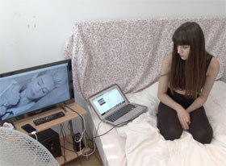

sexy

Kurdwin Ayub – Austria 2013 – 3 min.
DOP: David von der Stein – M: Miley Cyrus – V: Sixpackfilms
With her work sexy, the artist uses a simple, pleasurable, and funny approach to burst our notion of an unbroken transfer of female authenticity by the media. At first glance, it is hard to tell if sexy is an ad hoc You-tube clip, a poor-seeming parody, or even feminist video documentation of a succinct spontaneous performance? No idea. Certain is, Kurdwin Ayub’s pseudo-intimate settings shake a viewer’s stereotyped thinking. Here, with a rare lightness, her artistic playing field becomes a confusing deconstruction of strategically employed aesthetics. – Petra Erdmann
Wednesday 15/10 8:30 p.m. Werkstattkino
Kurdwin Ayub, born in 1990 in Iraq. Studies at the University of Applied Arts in Vienna.
Films (selection): Mutterkindpass 2009 – Knochenschwund 2010 – Homevideo 2010 – We love Naturburschen 2011 – Schneiderei (Vaginale VI) 2011 – Kate & William 2011 – Sommerurlaub (Vaginale VII) 2011 – sexy 2013